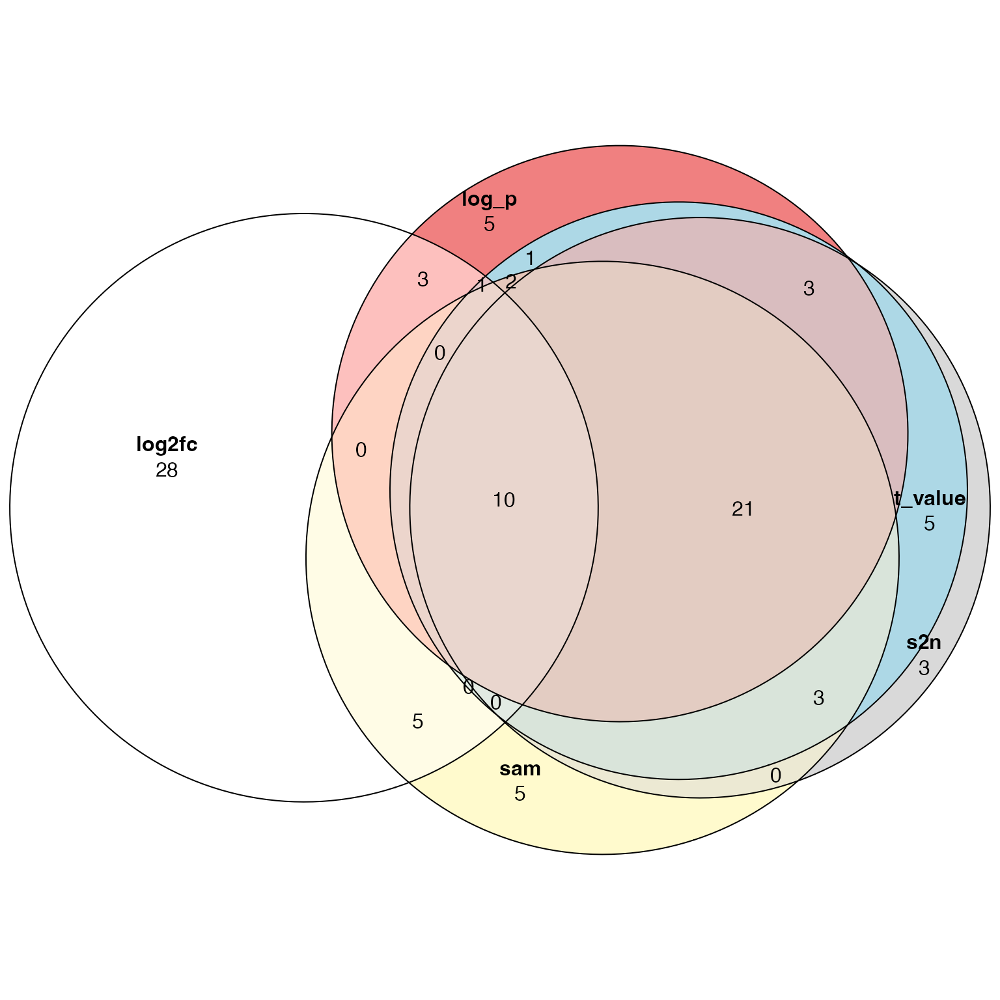

Topic 2-05: fgsea
Zuguang Gu z.gu@dkfz.de
2025-05-29
Source:vignettes/topic2_04_fgsea.Rmd
topic2_04_fgsea.RmdThe permutation-based method is by nature very slow, especially if you want to get p-values in high precision. In this document, we demonstrate the use of an extremely fast package fgsea, but only for the gene-permutation-based method.
We still use the p53 dataset.
library(GSEAtopics)
data(p53_dataset)
s = p53_dataset$s
gs = p53_dataset$gsThe use of fgsea is striaghtforward. Just use the
fgsea() function:
## pathway pval padj log2err ES
## <char> <num> <num> <num> <num>
## 1: 41bbPathway 0.5826772 0.8437021 0.08553569 0.2709496
## 2: ADULT_LIVER_vs_FETAL_LIVER_GNF2 0.4524457 0.7673679 0.06464846 -0.2593511
## 3: ANDROGEN_GENES_FROM_NETAFFX 0.5583333 0.8348651 0.05571042 -0.2476218
## 4: ANDROGEN_UP_GENES 0.0732458 0.4163595 0.28780513 0.2987018
## 5: ANTI_CD44_DOWN 0.7672634 0.9132431 0.06977925 0.2597386
## 6: ANTI_CD44_UP 0.6135338 0.8518277 0.05502111 -0.2848141
## NES size leadingEdge
## <num> <int> <list>
## 1: 0.9004369 18 RELA, MA....
## 2: -1.0054655 61 RODH-4, ....
## 3: -0.9360798 53 RODH-4, ....
## 4: 1.3105071 57 VAPA, LM....
## 5: 0.7597468 12 LAMP2, E....
## 6: -0.8918719 23 IL1A, AL....You only need to make gene IDs in s (the name of the
vector) are the same as in gs.
Implement helper functions
The same as the ora_*() functions for different types of
gene sets, we can also implement the fgsea_*()
functions.
We first define a wrapper function where we rename the colnames of
the data frame from fgsea(), just let it be consistent to
the results from ora_*() functions. We also reorder the
result data frame by p-values.
fgsea_wrapper = function(s, gs, min_size = 5, max_size = 1000, ...) {
s = sort(s, decreasing = TRUE)
df = fgsea(gs, s, minSize = min_size, maxSize = max_size, ...)
df = as.data.frame(df)
colnames(df) = c("gene_set", "p_value", "p_adjust", "log2_p_err", "es", "nes", "n_gs", "leading_edge")
df = df[order(df$p_value), , drop = FALSE]
rownames(df) = NULL
df
}Now we can write these helper functions. The logic is the same as
ora_*() functions. We first retrieve gene sets than apply
fgsea_wrapper().
fgsea_go = function(s, org_db = org.Hs.eg.db::org.Hs.eg.db, ontology = "BP") {
tb = AnnotationDbi::select(org_db, keys = ontology, keytype = "ONTOLOGYALL",
columns = c("ENTREZID", "GOALL"))
gs = split(tb$ENTREZID, tb$GOALL)
gs = lapply(gs, function(x) {
as.character(unique(x))
})
fgsea_wrapper(s, gs)
}
fgsea_kegg = function(s, organism = "hsa") {
pathway_genes = read.table(url(paste0("https://rest.kegg.jp/link/pathway/", organism)),
sep = "\t", quote = "")
pathway_genes[, 1] = gsub("^\\w+:", "", pathway_genes[, 1])
pathway_genes[, 2] = gsub("^\\w+:", "", pathway_genes[, 2])
pathway_genes = split(pathway_genes[, 1], pathway_genes[, 2])
fgsea_wrapper(s, pathway_genes)
}All these fgsea_*() functions use EntreZ IDs as the
internal IDs. Then for the input gene score vector, genes should also
have EntreZ IDs.
Convert gene IDs
We have demonstrated how to convert gene IDs for a vector of genes. Here the scenario is a little bit different. Gene IDs are names of a numeric vevtor.
We first generate a global mapping between symbols and EntreZ IDs:
library(org.Hs.eg.db)
map = map_to_entrez_id("SYMBOL", org.Hs.eg.db)map_to_entrez_id() only returns mapping for
protein-coding genes. According to the pratice we have made, the human,
the mapping between symbols and EntreZ IDs is one-to-one. But we need to
be careful. 1. gene symbols change from time to time. You cannot ensure
the symbol used in the dataset is the most recent version. 2. for other
organisms, we don’t know whether the mapping is also one-to-one. Let’s
do it in a conservative way.
symbol = names(s)
entrez = map[symbol]in entrez, there are possible NA values or
duplicated values. We first remove NAs:
s2 = unname(s) # since s2 will have EntreZ IDs as names
l = !is.na(entrez)
s2 = s2[l]
entrez = entrez[l]Then remove duplicates, either only keep the first one, or take the mean.
I use the mean:
s2 = tapply(s2, entrez, mean)In GSEAtopics, there is a helper function
convert_to_entrez_id() which works on gene ID vecotr,
numeric vector with gene IDs as names, and matrix with gene IDs as row
names.
s2 = convert_to_entrez_id(s) # if is human, the the second argument can be omitted## gene id might be SYMBOL (p = 0.680 )And let’s try these fgsea_*() helper functions:
## gene_set p_value p_adjust log2_p_err es nes n_gs
## 1 GO:0007186 2.081795e-10 1.524707e-06 0.8266573 -0.3600615 -1.838127 512
## 2 GO:0002682 1.783344e-08 6.530605e-05 0.7337620 -0.2997243 -1.581012 912
## 3 GO:0022402 3.322465e-07 8.111244e-04 0.6749629 0.2522013 1.540379 577
## 4 GO:0050776 2.609926e-06 4.547958e-03 0.6272567 -0.3066230 -1.570486 542
## 5 GO:0002684 3.104832e-06 4.547958e-03 0.6272567 -0.2981775 -1.543817 645
## 6 GO:1902850 4.695924e-06 5.732158e-03 0.6105269 0.4574162 2.065071 71
## leading_edge
## 1 23620, 2....
## 2 1026, 58....
## 3 29899, 1....
## 4 581, 677....
## 5 1026, 58....
## 6 29899, 9....
head(fgsea_kegg(s2))## gene_set p_value p_adjust log2_p_err es nes n_gs
## 1 hsa04080 4.597341e-08 1.622861e-05 0.7195128 -0.4052099 -1.925672 234
## 2 hsa03010 1.335615e-07 2.357360e-05 0.6901325 -0.5122149 -2.131406 85
## 3 hsa04060 2.114913e-06 2.488548e-04 0.6272567 -0.3936669 -1.836075 193
## 4 hsa04940 1.209843e-05 1.067686e-03 0.5933255 -0.5971851 -2.141821 36
## 5 hsa04081 5.328841e-05 3.762162e-03 0.5573322 -0.3766489 -1.741364 180
## 6 hsa05332 8.980278e-05 5.283397e-03 0.5384341 -0.6071862 -2.068430 29
## leading_edge
## 1 23620, 2....
## 2 6223, 61....
## 3 355, 343....
## 4 355, 355....
## 5 2100, 15....
## 6 355, 355....In GSEAtopics there are the following
fgsea_*() functions:
Compare to the native implementations
Let’s have a quick comparison between the fgsea()
function and gene-permutation-based function we have implemented in the
previous document. We use the gsea_gene_perm() functionn
from the GSEAtopics package. Under the default setting,
both functions use the same statistic and perform two-sided test:
df1 = fgsea_wrapper(s, gs)
df2 = gsea_gene_perm(s, gs, verbose = FALSE)We compare p-values and NES from the functions:
rownames(df1) = df1$gene_set
rownames(df2) = df2$gene_set
cn = intersect(rownames(df1), rownames(df2))
par(mfrow = c(1, 2))
plot(df1[cn, "p_value"], df2[cn, "p_value"], main = "p_value", xlab = "fgsea", ylab = "native")
plot(df1[cn, "nes"], df2[cn, "nes"], main = "nes", xlab = "fgsea", ylab = "native")And for the one-sided test which only look for enrichment of up-regulated genes:
df1 = fgsea_wrapper(s, gs, scoreType = "pos")
df2 = gsea_gene_perm(s, gs, direction = "pos", verbose = FALSE)
rownames(df1) = df1$gene_set
rownames(df2) = df2$gene_set
cn = intersect(rownames(df1), rownames(df2))
par(mfrow = c(1, 2))
plot(df1[cn, "p_value"], df2[cn, "p_value"], main = "p_value", xlab = "fgsea", ylab = "native")
plot(df1[cn, "nes"], df2[cn, "nes"], main = "nes", xlab = "fgsea", ylab = "native")Other ways to capture bi-directional changes
The default behavior of two-sided fgsea() or the GSEA
method is to capture the stronger one of the up- and down-regulation of
genes in a gene set. There are two other ways:
- If you want to keep enrichment for both up-regulated and down-regulated genes. You can perform two GSEA analysis, a one-sided test only for up-regulated genes and a second one-sided test only for down-regulated genes.
- if the gene score is log2fc-like, i.e. with both positive and
negative values, and if you do not care the direction of the
differential expression, you can use
|s|as the gene scores.
Which type of gene scores to use
GSEA requires a pre-calculated vector of gene-level scores. In the previous example, we use the signal-to-noise ratio. As there are many other ways to calculate a gene-level score. We ask, do they all perform similarly or which ones are better and which ones are worse?
Let’s go back to the original dataset, the matrix and the condition vector:
expr = p53_dataset$expr
condition = p53_dataset$conditionWe try the following five metrics: log2 fold change, signal-to-noise ratio, t-value, -log p-value multiplies by the sign of t-values, SAM moderated t-value.
m1 = expr[, condition == "MUT"]
m2 = expr[, condition == "WT"]
library(matrixStats)
log2fc = log2(rowMeans(m1)/rowMeans(m2))
s2n = (rowMeans(m1) - rowMeans(m2))/(rowSds(m1) + rowSds(m2))
library(genefilter)
tdf = rowttests(expr, condition) # equal variance
t_value = tdf$statistic
names(t_value) = rownames(tdf)
log_p = -log10(tdf$p.value)*sign(tdf$statistic)
names(log_p) = rownames(tdf)
n1 = ncol(m1)
n2 = ncol(m2)
v1 = rowVars(m1)
v2 = rowVars(m2)
sp = sqrt( ((n1-1)*v1 + (n2-1)*v2)/(n1 + n2 - 2) )*sqrt(1/n1 + 1/n2)
sam = (rowMeans(m1) - rowMeans(m2))/(sp + quantile(sp, 0.1))First we can make a pairwise scatter plot to see the similarities of the five metrics:
pairs(data.frame(log2fc = log2fc, s2n = s2n, t_value = t_value, log_p = log_p, sam = sam), pch = ".")We also look at the distribution of the five metrics:
par(mfrow = c(2, 3))
plot(sort(log2fc, decreasing = TRUE), main = "log2fc")
plot(sort(s2n, decreasing = TRUE), main = "s2n")
plot(sort(t_value, decreasing = TRUE), main = "t_value")
plot(sort(log_p, decreasing = TRUE), main = "log_p")
plot(sort(sam, decreasing = TRUE), main = "sam")And we perform GSEA with five gene score vectors.
tb_log2fc = fgsea_wrapper(sort(log2fc, decreasing = TRUE), gs)
tb_s2n = fgsea_wrapper(sort(s2n, decreasing = TRUE), gs)
tb_t_value = fgsea_wrapper(sort(t_value, decreasing = TRUE), gs)
tb_log_p = fgsea_wrapper(sort(log_p, decreasing = TRUE), gs)
tb_sam = fgsea_wrapper(sort(sam, decreasing = TRUE), gs)Top 50 most significant gene sets:
library(eulerr)
plot(euler(list(log2fc = tb_log2fc$gene_set[1:50],
s2n = tb_s2n$gene_set[1:50],
t_value = tb_t_value$gene_set[1:50],
log_p = tb_log_p$gene_set[1:50],
sam = tb_sam$gene_set[1:50])),
quantities = TRUE)
Conclusion: use t-value or similar metrics as gene-level scores for GSEA analysis.